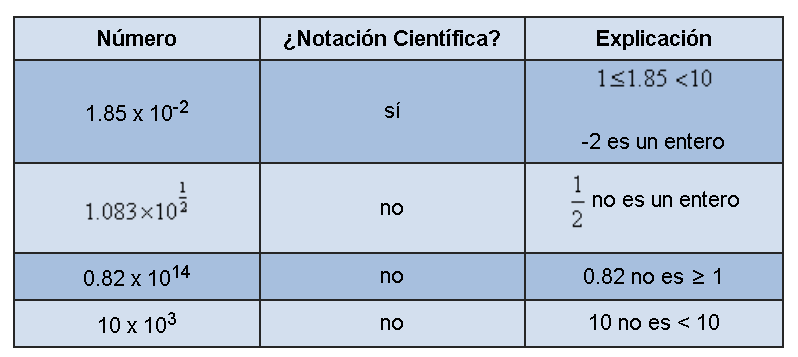
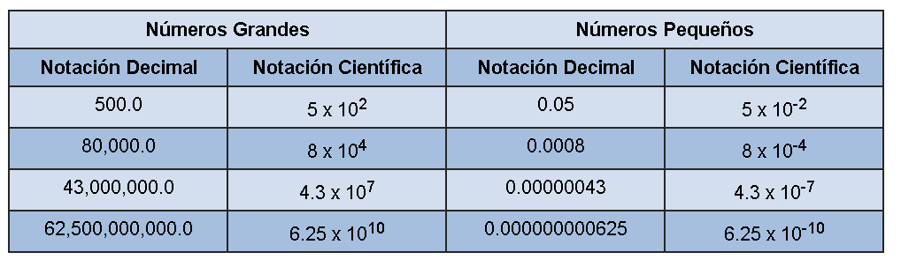

FÍSICA
Profesor de curso: Hector Sanchez
Notación Científica
Cuando trabajan con números muy grandes o muy pequeños, los científicos, matemáticos e ingenieros usan notación científica para expresar esas cantidades. La notación científica es una abreviación matemática, basada en la idea de que es más fácil leer un exponente que contar muchos ceros en un número. Números muy grandes o muy pequeños necesitan menos espacio cuando son escritos en notación científica porque los valores de posición están expresados como potencias de 10. Cálculos con números largos son más fáciles de hacer cuando se usa notación científica.
La célula roja humana es muy pequeña y se estima que tiene un diámetro de 0.0065 milímetros. Por otro lado, un año luz es una unidad de distancia muy grande que mide alrededor de 10,000,000,000,000,000 metros. Ambas cantidades son difíciles de escribir, y sería muy fácil ponerles o quitarles un cero o dos de más. Pero en notación científica, el diámetro de una célula roja se escribe como 6.5 x 10-3 milímetros, y un año luz es más o menos 1 x 1016 metros. Esas cantidades son más fáciles de usar que sus versiones largas.
Nota que es el exponente el que nos dice si el término es un número muy grande o muy pequeño. Si el número es ≥ 1 en la notación decimal estándar, el exponente será ≥ 0 en notación científica. En otras palabras, números grandes requieren potencias positivas de 10.
Si un número está entre 0 y 1 en notación estándar, el exponente será < 0 en notación científica. Números pequeños son descritos por potencias negativas de 10.
Formato de la Notación Científica: La forma general de un número en notación científica es a x 10^n donde 1 <= a < 10 y n es un entero.

Sólo los números que siguen las convenciones apropiadas para todas las partes de la expresión se consideran notación científica.
Ahora que entendemos el formato de notación científica, comparemos algunos números expresados en notación decimal estándar y notación científica para entender cómo convertir de una forma a la otra. Observa la tabla de abajo. Pon mucha atención al exponente de la notación científica y la posición del punto decimal en la notación estándar.
